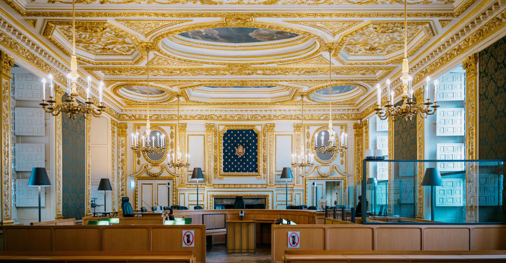
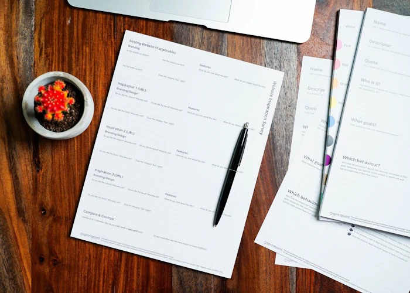

Банкротство без потери того, что для вас важно
Списываю долги граждан, защищаю директоров и собственников от личной ответственности по долгам компании и использую банкротство как инструмент, чтобы вернуть деньги кредитору.
Разобрать мою ситуациюС какой задачей вы пришли?
Списать долги
Проверю, подходит ли вам банкротство, что будет с имуществом и сколько займёт процедура.
- кредиты, займы, поручительства
- сохранение единственного жилья
- остановка звонков коллекторов и взысканий
Защитить личные активы
Оценю риск субсидиарной ответственности и выстрою защиту до того, как требования предъявят вам лично.
- анализ сделок и документов компании
- позиция по заявлению конкурсного управляющего
- защита имущества семьи
Вернуть долг
Использую банкротство должника и ответственность контролирующих лиц как инструменты взыскания.
- включение в реестр требований
- оспаривание сделок должника
- привлечение директора к ответственности
Как проходит банкротство гражданина
- Разбор и оценкаИзучаю долги, доходы, имущество и сделки за 3 года. Говорю честно, подходит ли процедура и какие риски.
- Подготовка заявленияСобираю документы, выбираем финансового управляющего, подаём заявление в арбитражный суд.
- Процедура в судеВеду дело, отвечаю кредиторам и управляющему, защищаю имущество от включения в конкурсную массу.
- Списание долговСуд завершает процедуру и освобождает от обязательств. Обычно весь путь – от 6 до 10 месяцев.
Жильё и привычная жизнь
- единственное жильё, если оно не в залоге
- ипотечную квартиру – в ряде случаев, через соглашение с банком
- вещи обычной домашней обстановки
- прожиточный минимум на себя и детей
Долги, которые остаются
- алименты и возмещение вреда здоровью
- субсидиарная ответственность по долгам компании
- долги, возникшие после начала процедуры
- долги, если суд увидит недобросовестность должника
Дела по банкротству
Все кейсы
Частые вопросы
Сколько стоит банкротство?
Зависит от числа кредиторов, имущества и спорных сделок. После разбора ситуации назову фиксированную стоимость и этапы оплаты – без доплат по ходу дела.
Заберут ли квартиру?
Единственное жильё, которое не в залоге, по закону не продают. С ипотечной квартирой сложнее, но в ряде случаев её удаётся сохранить – как в одном из дел выше.
Что будет с работой и зарплатой?
Работу банкротство не отнимает. Часть дохода в пределах прожиточного минимума остаётся вам, остальное идёт на расчёты с кредиторами во время процедуры.
Я директор, компания в долгах. Мне лично что-то грозит?
Если компанию банкротят, управляющий может потребовать с директора и собственников её долги лично. Чем раньше оценить риски и собрать доказательства добросовестности, тем сильнее защита.
Можно ли решить вопрос без суда?
Иногда да: реструктуризация, мировое соглашение или переговоры с кредиторами. Я медиатор, поэтому сначала ищем такой путь, если он выгоднее.